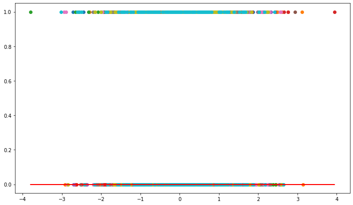
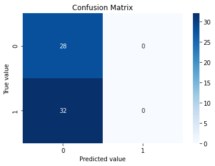
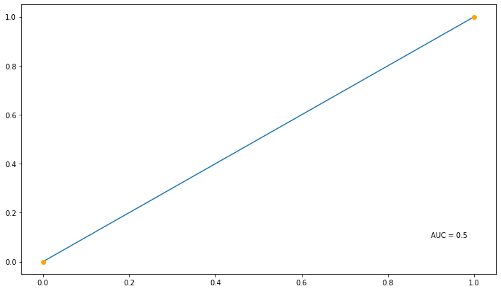
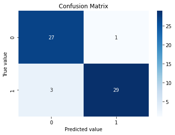
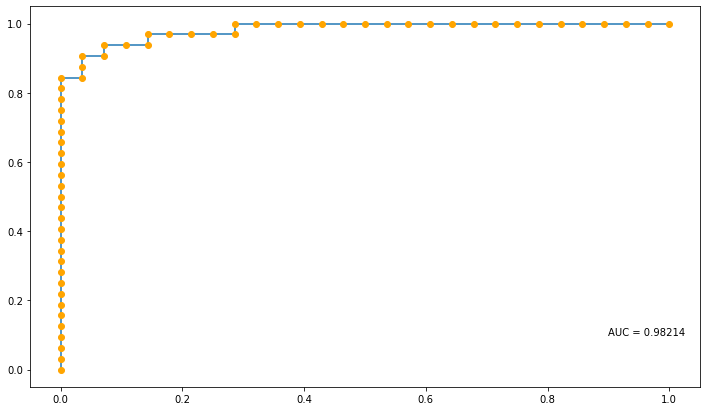

Exploring the functionality within the hime.LogisticRegression class¶
[1]:
import os
import numpy as np
import pandas as pd
import seaborn as sns
import matplotlib.pyplot as plt
from sklearn.datasets import make_classification
from sklearn.metrics import log_loss, roc_curve, roc_auc_score, confusion_matrix
import session_info
pd.set_option('display.float_format', lambda x: '%.3f' % x)
[3]:
current_wd = os.getcwd()
os.chdir(current_wd.split("/notebook")[0])
from hime.logistic_model import LogisticRegression
os.chdir(current_wd)
[4]:
session_info.show(write_req_file=False)
[4]:
Click to view session information
----- hime 0.0.1 matplotlib 3.3.4 numpy 1.20.3 pandas 1.1.5 seaborn 0.11.1 session_info 1.0.0 sklearn 0.23.2 -----
Click to view modules imported as dependencies
PIL 8.3.1 anyio NA appnope 0.1.2 attr 21.2.0 babel 2.9.1 backcall 0.2.0 beta_ufunc NA binom_ufunc NA brotli NA casadi 3.5.5 certifi 2020.06.20 cffi 1.14.6 chardet 4.0.0 charset_normalizer 2.0.0 cycler 0.10.0 cython_runtime NA dateutil 2.8.2 decorator 5.0.9 defusedxml 0.7.1 idna 3.1 ipykernel 6.0.3 ipython_genutils 0.2.0 jedi 0.18.0 jinja2 3.0.1 joblib 1.0.1 json5 NA jsonschema 3.2.0 jupyter_server 1.10.1 jupyterlab_server 2.6.1 kiwisolver 1.3.1 markupsafe 2.0.1 matplotlib_inline NA mpl_toolkits NA nbclassic NA nbformat 5.1.3 nbinom_ufunc NA packaging 21.0 parso 0.8.2 pexpect 4.8.0 pickleshare 0.7.5 pkg_resources NA prometheus_client NA prompt_toolkit 3.0.19 ptyprocess 0.7.0 pvectorc NA pygments 2.9.0 pyparsing 2.4.7 pyrsistent NA pytz 2021.1 requests 2.26.0 scipy 1.7.0 send2trash NA six 1.16.0 sniffio 1.2.0 socks 1.7.1 statsmodels 0.12.2 storemagic NA swig_runtime_data4 NA terminado 0.10.1 tornado 6.1 traitlets 5.0.5 urllib3 1.26.6 wcwidth 0.2.5 websocket 0.57.0 zmq 22.1.0
----- IPython 7.25.0 jupyter_client 6.1.12 jupyter_core 4.7.1 jupyterlab 3.1.1 notebook 6.4.0 ----- Python 3.8.10 (default, May 19 2021, 11:01:55) [Clang 10.0.0 ] macOS-10.16-x86_64-i386-64bit ----- Session information updated at 2021-10-21 15:01
Make X and y data¶
[5]:
amount_of_features = 10
amount_informative = 2
X, y = make_classification(n_samples=300,
n_features=amount_of_features,
n_informative=amount_informative,
# noise=5,
# coef=True,
random_state=42)
[6]:
# X = X + 100
Fit the model¶
[7]:
df = (pd.DataFrame(X, columns=[f"feat_{x}" for x in range(0, X.shape[1])])
.merge(pd.DataFrame(y, columns=["target"]),
left_index=True,
right_index=True))
[8]:
df.head()
[8]:
| feat_0 | feat_1 | feat_2 | feat_3 | feat_4 | feat_5 | feat_6 | feat_7 | feat_8 | feat_9 | target | |
|---|---|---|---|---|---|---|---|---|---|---|---|
| 0 | -0.025 | 1.452 | -1.203 | 1.248 | -0.508 | 0.923 | 0.300 | -0.453 | -0.148 | 0.327 | 1 |
| 1 | 0.750 | 0.098 | 0.664 | -0.680 | 0.254 | -0.339 | -0.392 | 1.086 | 0.468 | 0.308 | 0 |
| 2 | -1.236 | -0.839 | -0.903 | 0.922 | 0.538 | 0.411 | -1.966 | -0.365 | 1.073 | -1.045 | 1 |
| 3 | -1.615 | -0.756 | -0.722 | 0.729 | -0.668 | 0.183 | -0.898 | -0.175 | 0.992 | 0.537 | 1 |
| 4 | -0.724 | 0.633 | 0.952 | -0.997 | -0.832 | -0.903 | -1.516 | -0.552 | 0.471 | 0.203 | 0 |
[9]:
df_train = df.sample(frac=0.8, random_state=69420)
df_test = df.drop(df_train.index)
[10]:
df_train.shape, df_test.shape
[10]:
((240, 11), (60, 11))
Fit the romeo LogisticRegression¶
[11]:
reg = LogisticRegression(fit_intercept=True,
normalize=True).fit(X=df_train.filter(regex="feat"),
y=df_train["target"],
verbose=False)
CasADi - 2021-10-21 15:01:47 WARNING("ols:nlp_grad_f failed: NaN detected for output grad_f_x, at (row 0, col 0).") [.../casadi/core/oracle_function.cpp:265]
CasADi - 2021-10-21 15:01:47 WARNING("ols:nlp_grad_f failed: NaN detected for output grad_f_x, at (row 0, col 0).") [.../casadi/core/oracle_function.cpp:265]
[12]:
reg.intercept_, reg.coef_
[12]:
(0.0, array([0., 0., 0., 0., 0., 0., 0., 0., 0., 0.]))
[13]:
reg.summary_.round(3)
#reg.score(X, y)
---------------------------------------------------------------------------
AttributeError Traceback (most recent call last)
/var/folders/rc/1g_69mqs4t5dxcsd6dbczl_m0000gn/T/ipykernel_4643/3682259650.py in <module>
----> 1 reg.summary_.round(3)
2 #reg.score(X, y)
AttributeError: 'LogisticRegression' object has no attribute 'summary_'
[14]:
# reg.fit_evaluation_.round(3)
Show the available methods and attributes of the fitted model¶
[15]:
np.array(dir(reg))
[15]:
array(['__class__', '__delattr__', '__dict__', '__dir__', '__doc__',
'__eq__', '__format__', '__ge__', '__getattribute__',
'__getstate__', '__gt__', '__hash__', '__init__',
'__init_subclass__', '__le__', '__lt__', '__module__', '__ne__',
'__new__', '__reduce__', '__reduce_ex__', '__repr__',
'__setattr__', '__setstate__', '__sizeof__', '__str__',
'__subclasshook__', '__weakref__', '_check_n_features',
'_estimator_type', '_get_param_names', '_get_tags', '_more_tags',
'_repr_html_', '_repr_html_inner', '_repr_mimebundle_',
'_validate_data', 'aic', 'bic', 'coef_', 'conf_int', 'copy_X',
'cost', 'ess', 'f_pvalue', 'fit', 'fit_intercept', 'fvalue',
'get_params', 'intercept_', 'is_fitted_', 'loglike', 'mse_model',
'mse_resid', 'mse_total', 'normalize', 'params', 'positive',
'predict', 'predictors', 'resid', 'rsquared', 'rsquared_adj',
'score', 'set_params', 'ssr', 'target', 'theta', 'uncentered_tss'],
dtype='<U17')
[16]:
# reg.conf_int()
[17]:
reg.df_resid
---------------------------------------------------------------------------
AttributeError Traceback (most recent call last)
/var/folders/rc/1g_69mqs4t5dxcsd6dbczl_m0000gn/T/ipykernel_4643/764227379.py in <module>
----> 1 reg.df_resid
AttributeError: 'LogisticRegression' object has no attribute 'df_resid'
[18]:
intercept = reg.intercept_
coefs = reg.coef_
[19]:
coefs
[19]:
array([0., 0., 0., 0., 0., 0., 0., 0., 0., 0.])
[20]:
coefs.reshape(1,-1)
[20]:
array([[0., 0., 0., 0., 0., 0., 0., 0., 0., 0.]])
[21]:
coefs*df_train.filter(regex="feat").head()
Note: NumExpr detected 12 cores but "NUMEXPR_MAX_THREADS" not set, so enforcing safe limit of 8.
NumExpr defaulting to 8 threads.
[21]:
| feat_0 | feat_1 | feat_2 | feat_3 | feat_4 | feat_5 | feat_6 | feat_7 | feat_8 | feat_9 | |
|---|---|---|---|---|---|---|---|---|---|---|
| 110 | -0.000 | -0.000 | -0.000 | 0.000 | 0.000 | 0.000 | -0.000 | -0.000 | 0.000 | 0.000 |
| 139 | -0.000 | 0.000 | -0.000 | 0.000 | 0.000 | 0.000 | -0.000 | 0.000 | -0.000 | -0.000 |
| 21 | -0.000 | -0.000 | 0.000 | -0.000 | 0.000 | -0.000 | 0.000 | 0.000 | 0.000 | -0.000 |
| 86 | 0.000 | -0.000 | 0.000 | -0.000 | -0.000 | -0.000 | -0.000 | -0.000 | 0.000 | 0.000 |
| 81 | 0.000 | -0.000 | -0.000 | 0.000 | -0.000 | 0.000 | -0.000 | -0.000 | 0.000 | 0.000 |
[22]:
tmp_x = df_train.filter(regex="feat").assign(intercept=1).set_index("intercept").reset_index().values
[23]:
tmp_x = reg.intercept_ * tmp_x
[24]:
# np.linalg.inv(np.dot(tmp_x.T, tmp_x))
[25]:
cov_mat = np.linalg.inv(np.matmul(tmp_x.transpose(1,0), tmp_x))
---------------------------------------------------------------------------
LinAlgError Traceback (most recent call last)
/var/folders/rc/1g_69mqs4t5dxcsd6dbczl_m0000gn/T/ipykernel_4643/905158982.py in <module>
----> 1 cov_mat = np.linalg.inv(np.matmul(tmp_x.transpose(1,0), tmp_x))
<__array_function__ internals> in inv(*args, **kwargs)
/opt/miniconda3/envs/pymer4_env/lib/python3.8/site-packages/numpy/linalg/linalg.py in inv(a)
543 signature = 'D->D' if isComplexType(t) else 'd->d'
544 extobj = get_linalg_error_extobj(_raise_linalgerror_singular)
--> 545 ainv = _umath_linalg.inv(a, signature=signature, extobj=extobj)
546 return wrap(ainv.astype(result_t, copy=False))
547
/opt/miniconda3/envs/pymer4_env/lib/python3.8/site-packages/numpy/linalg/linalg.py in _raise_linalgerror_singular(err, flag)
86
87 def _raise_linalgerror_singular(err, flag):
---> 88 raise LinAlgError("Singular matrix")
89
90 def _raise_linalgerror_nonposdef(err, flag):
LinAlgError: Singular matrix
[26]:
# abs(cov_mat)
[27]:
# np.sqrt(np.diag(abs(cov_mat)))
[28]:
# pd.DataFrame(np.cov(tmp_x))
[29]:
# Statsmodels cov_params
"""
Notes
-----
(The below are assumed to be in matrix notation.)
If no argument is specified returns the covariance matrix of a model
``(scale)*(X.T X)^(-1)``
If contrast is specified it pre and post-multiplies as follows
``(scale) * r_matrix (X.T X)^(-1) r_matrix.T``
If contrast and other are specified returns
``(scale) * r_matrix (X.T X)^(-1) other.T``
If column is specified returns
``(scale) * (X.T X)^(-1)[column,column]`` if column is 0d
OR
``(scale) * (X.T X)^(-1)[column][:,column]`` if column is 1d
"""
[29]:
'\nNotes\n-----\n(The below are assumed to be in matrix notation.)\nIf no argument is specified returns the covariance matrix of a model\n``(scale)*(X.T X)^(-1)``\nIf contrast is specified it pre and post-multiplies as follows\n``(scale) * r_matrix (X.T X)^(-1) r_matrix.T``\nIf contrast and other are specified returns\n``(scale) * r_matrix (X.T X)^(-1) other.T``\nIf column is specified returns\n``(scale) * (X.T X)^(-1)[column,column]`` if column is 0d\nOR\n``(scale) * (X.T X)^(-1)[column][:,column]`` if column is 1d\n'
Plot the original data and the lines of best fit for each of the predictors on the target¶
[30]:
_ = plt.figure(figsize=(12, 7))
_ = plt.plot(df_train.filter(regex="feat"),
df_train["target"],
'o',
label='original data')
_ = plt.plot(df_train.filter(regex="feat"),
intercept + coefs*df_train.filter(regex="feat"),
'r',
label='fitted line')
# _ = plt.legend()

With the fitted model attempt to predict the test data¶
[31]:
y_pred = reg.predict(df_test.filter(regex="feat"))
y_pred.head(2)
[31]:
| y_pred | |
|---|---|
| 9 | 0.500 |
| 37 | 0.500 |
[32]:
y_test = df_test[["target"]]
y_test.head(2)
[32]:
| target | |
|---|---|
| 9 | 1 |
| 37 | 1 |
Calculate the Log loss between the predicted vs the real scores¶
[33]:
log_loss_score = log_loss(y_test["target"],
y_pred)
log_loss_score
[33]:
0.6931471805599454
Plot the predicted vs the real values¶
[34]:
c_mat = confusion_matrix(y_test["target"], y_pred.round(0))
[35]:
cmap='Blues'
categories=["0", "1"]
_ = sns.heatmap(c_mat,
annot=True,
# fmt="",
cmap=cmap,
# cbar=cbar,
xticklabels=categories,
yticklabels=categories
)
_ = plt.title("Confusion Matrix")
# _ = plt.xlabel(f'Predicted value\n\nAccuracy={summary_df["Accuracy"].values[0]}\nSensitivity={summary_df["Sensitivity"].values[0]}\nSpecificity={summary_df["Specificity"].values[0]}\nF1 Score={summary_df["F1"].values[0]}')
_ = plt.xlabel(f'Predicted value')
_ = plt.ylabel("True value")

[36]:
# _ = plt.figure(figsize=(12, 7))
# _ = plt.plot(y_test["target"],
# y_pred,
# 'o',
# # label='original data'
# )
# _ = plt.annotate(text = f"Log Loss = {round(log_loss, 5)}",
# xy=(0.9, 0.1),)
[37]:
fpr, tpr, thresh = roc_curve(y_true=y_test["target"], y_score=y_pred, pos_label=1, sample_weight=None, drop_intermediate=False)
[38]:
auc_score = roc_auc_score(y_true=y_test["target"], y_score=y_pred)
[39]:
_ = plt.figure(figsize=(12, 7))
_ = plt.plot(fpr,
tpr,
# 'o',
)
_ = plt.plot(fpr,
tpr,
'o',
c="orange"
)
_ = plt.annotate(text = f"AUC = {round(auc_score, 5)}",
xy=(0.9, 0.1),)

Statsmodels¶
[40]:
import statsmodels
# from statsmodels.regression.linear_model import OLS
from statsmodels.discrete.discrete_model import Logit
from scipy import stats
[41]:
# df_train["target"]
# statsmodels.tools.tools.add_constant(data=df_train.filter(regex="feat"), prepend=True, has_constant='skip')
[42]:
res = Logit(endog=df_train["target"], exog=statsmodels.tools.tools.add_constant(data=df_train.filter(regex="feat"), prepend=True, has_constant='skip')).fit()
# res = Logit(endog=df_train["target"], exog=df_train.filter(regex="feat"), prepend=True, has_constant='skip').fit()
Warning: Maximum number of iterations has been exceeded.
Current function value: 0.202515
Iterations: 35
/opt/miniconda3/envs/pymer4_env/lib/python3.8/site-packages/statsmodels/base/model.py:566: ConvergenceWarning: Maximum Likelihood optimization failed to converge. Check mle_retvals
warnings.warn("Maximum Likelihood optimization failed to "
[43]:
coefs
[43]:
array([0., 0., 0., 0., 0., 0., 0., 0., 0., 0.])
[44]:
res.params
[44]:
const -0.116
feat_0 0.316
feat_1 0.291
feat_2 -1.449
feat_3 1.507
feat_4 -0.059
feat_5 1.192
feat_6 -0.186
feat_7 0.372
feat_8 0.275
feat_9 0.019
dtype: float64
[45]:
# def bse(self):
# return np.sqrt(np.diag(self.cov_params()))
[46]:
np.round(res.bse, 3)
[46]:
const 0.270
feat_0 nan
feat_1 0.247
feat_2 nan
feat_3 nan
feat_4 0.284
feat_5 nan
feat_6 0.251
feat_7 0.279
feat_8 0.282
feat_9 0.270
dtype: float64
[47]:
np.sqrt(np.diag(res.cov_params()))
/var/folders/rc/1g_69mqs4t5dxcsd6dbczl_m0000gn/T/ipykernel_4643/3404882093.py:1: RuntimeWarning: invalid value encountered in sqrt
np.sqrt(np.diag(res.cov_params()))
[47]:
array([0.26961015, nan, 0.2470222 , nan, nan,
0.283841 , nan, 0.25069705, 0.27905625, 0.28220322,
0.27024427])
[48]:
res.cov_params()
[48]:
| const | feat_0 | feat_1 | feat_2 | feat_3 | feat_4 | feat_5 | feat_6 | feat_7 | feat_8 | feat_9 | |
|---|---|---|---|---|---|---|---|---|---|---|---|
| const | 0.073 | -0.001 | -0.005 | 0.018 | -0.002 | 0.009 | -0.002 | -0.004 | -0.001 | -0.000 | 0.002 |
| feat_0 | 0.005 | -80544246683306.047 | 0.001 | 206848537712461.844 | -61431330697088.648 | 0.008 | 350404437956444.375 | 0.009 | 0.001 | -0.007 | 0.000 |
| feat_1 | -0.005 | 0.007 | 0.061 | -0.014 | 0.046 | 0.007 | -0.043 | 0.003 | 0.004 | 0.001 | -0.001 |
| feat_2 | -0.002 | 241481911792557.469 | 0.006 | -814517098063326.125 | -10782764511563.660 | -0.018 | -1040288202666481.625 | -0.034 | -0.006 | -0.014 | 0.004 |
| feat_3 | -0.001 | -26690526379933.066 | 0.041 | -126416831645487.594 | -215923418623698.562 | 0.007 | 126416831645487.609 | -0.002 | 0.018 | 0.006 | 0.003 |
| feat_4 | 0.009 | 0.001 | 0.007 | 0.006 | 0.009 | 0.081 | -0.013 | -0.012 | 0.002 | -0.002 | 0.007 |
| feat_5 | -0.023 | 348574585390968.312 | -0.011 | -884917821518413.250 | 276159640467745.031 | -0.042 | -1517001979745851.500 | -0.058 | 0.022 | -0.003 | 0.014 |
| feat_6 | -0.004 | 0.009 | 0.003 | -0.032 | 0.001 | -0.012 | -0.059 | 0.063 | 0.004 | -0.001 | 0.001 |
| feat_7 | -0.001 | 0.013 | 0.004 | -0.034 | 0.030 | 0.002 | -0.029 | 0.004 | 0.078 | 0.010 | 0.018 |
| feat_8 | -0.000 | 0.006 | 0.001 | -0.061 | 0.005 | -0.002 | -0.061 | -0.001 | 0.010 | 0.080 | -0.004 |
| feat_9 | 0.002 | 0.005 | -0.001 | -0.010 | 0.006 | 0.007 | -0.007 | 0.001 | 0.018 | -0.004 | 0.073 |
[49]:
np.array(dir(res))
[49]:
array(['__class__', '__delattr__', '__dict__', '__dir__', '__doc__',
'__eq__', '__format__', '__ge__', '__getattribute__',
'__getstate__', '__gt__', '__hash__', '__init__',
'__init_subclass__', '__le__', '__lt__', '__module__', '__ne__',
'__new__', '__reduce__', '__reduce_ex__', '__repr__',
'__setattr__', '__sizeof__', '__str__', '__subclasshook__',
'__weakref__', '_cache', '_data_attr', '_data_in_cache',
'_get_endog_name', '_get_robustcov_results', '_use_t', 'aic',
'bic', 'bse', 'conf_int', 'cov_kwds', 'cov_params', 'cov_type',
'df_model', 'df_resid', 'f_test', 'fittedvalues', 'get_margeff',
'initialize', 'k_constant', 'llf', 'llnull', 'llr', 'llr_pvalue',
'load', 'mle_retvals', 'mle_settings', 'model', 'nobs',
'normalized_cov_params', 'params', 'pred_table', 'predict',
'prsquared', 'pvalues', 'remove_data', 'resid_dev',
'resid_generalized', 'resid_pearson', 'resid_response', 'save',
'scale', 'set_null_options', 'summary', 'summary2', 't_test',
't_test_pairwise', 'tvalues', 'use_t', 'wald_test',
'wald_test_terms'], dtype='<U22')
[50]:
res.summary()
[50]:
| Dep. Variable: | target | No. Observations: | 240 |
|---|---|---|---|
| Model: | Logit | Df Residuals: | 231 |
| Method: | MLE | Df Model: | 8 |
| Date: | Thu, 21 Oct 2021 | Pseudo R-squ.: | 0.7078 |
| Time: | 15:02:12 | Log-Likelihood: | -48.604 |
| converged: | False | LL-Null: | -166.35 |
| Covariance Type: | nonrobust | LLR p-value: | 2.044e-46 |
| coef | std err | z | P>|z| | [0.025 | 0.975] | |
|---|---|---|---|---|---|---|
| const | -0.1164 | 0.270 | -0.432 | 0.666 | -0.645 | 0.412 |
| feat_0 | 0.3157 | nan | nan | nan | nan | nan |
| feat_1 | 0.2906 | 0.247 | 1.177 | 0.239 | -0.194 | 0.775 |
| feat_2 | -1.4487 | nan | nan | nan | nan | nan |
| feat_3 | 1.5071 | nan | nan | nan | nan | nan |
| feat_4 | -0.0589 | 0.284 | -0.208 | 0.836 | -0.615 | 0.497 |
| feat_5 | 1.1920 | nan | nan | nan | nan | nan |
| feat_6 | -0.1860 | 0.251 | -0.742 | 0.458 | -0.677 | 0.305 |
| feat_7 | 0.3723 | 0.279 | 1.334 | 0.182 | -0.175 | 0.919 |
| feat_8 | 0.2746 | 0.282 | 0.973 | 0.331 | -0.279 | 0.828 |
| feat_9 | 0.0193 | 0.270 | 0.071 | 0.943 | -0.510 | 0.549 |
[51]:
reg.summary_.round(3)
---------------------------------------------------------------------------
AttributeError Traceback (most recent call last)
/var/folders/rc/1g_69mqs4t5dxcsd6dbczl_m0000gn/T/ipykernel_4643/2473483930.py in <module>
----> 1 reg.summary_.round(3)
AttributeError: 'LogisticRegression' object has no attribute 'summary_'
[52]:
y_pred = res.predict(exog=statsmodels.tools.tools.add_constant(data=df_test.filter(regex="feat"), prepend=True, has_constant='skip'))
Plot the predicted vs the real values¶
[53]:
c_mat = confusion_matrix(y_test["target"], y_pred.round(0),)
[54]:
cmap='Blues'
categories=["0", "1"]
_ = sns.heatmap(c_mat,
annot=True,
# fmt="",
cmap=cmap,
# cbar=cbar,
xticklabels=categories,
yticklabels=categories
)
_ = plt.title("Confusion Matrix")
# _ = plt.xlabel(f'Predicted value\n\nAccuracy={summary_df["Accuracy"].values[0]}\nSensitivity={summary_df["Sensitivity"].values[0]}\nSpecificity={summary_df["Specificity"].values[0]}\nF1 Score={summary_df["F1"].values[0]}')
_ = plt.xlabel(f'Predicted value')
_ = plt.ylabel("True value")

[55]:
log_loss_score = log_loss(y_test["target"],
y_pred)
log_loss_score
[55]:
0.1722146936512775
[56]:
# _ = plt.figure(figsize=(12, 7))
# _ = plt.plot(y_test["target"],
# y_pred,
# 'o',
# # label='original data'
# )
# _ = plt.annotate(text = f"Log Loss = {round(log_loss, 5)}",
# xy=(0.9, 0.1),)
[57]:
fpr, tpr, thresh = roc_curve(y_true=y_test["target"], y_score=y_pred, pos_label=1, sample_weight=None, drop_intermediate=False)
[58]:
auc_score = roc_auc_score(y_true=y_test["target"], y_score=y_pred)
[59]:
_ = plt.figure(figsize=(12, 7))
_ = plt.plot(fpr,
tpr,
# 'o',
)
_ = plt.plot(fpr,
tpr,
'o',
c="orange"
)
_ = plt.annotate(text = f"AUC = {round(auc_score, 5)}",
xy=(0.9, 0.1),)

[60]:
reg.fit_evaluation_.round(4)
---------------------------------------------------------------------------
AttributeError Traceback (most recent call last)
/var/folders/rc/1g_69mqs4t5dxcsd6dbczl_m0000gn/T/ipykernel_4643/2958022505.py in <module>
----> 1 reg.fit_evaluation_.round(4)
AttributeError: 'LogisticRegression' object has no attribute 'fit_evaluation_'
[61]:
stop!
File "/var/folders/rc/1g_69mqs4t5dxcsd6dbczl_m0000gn/T/ipykernel_4643/3319058519.py", line 1
stop!
^
SyntaxError: invalid syntax
[62]:
res.llf
[62]:
-48.60352327678345
[63]:
res.params / res.bse
[63]:
const -0.432
feat_0 nan
feat_1 1.177
feat_2 nan
feat_3 nan
feat_4 -0.208
feat_5 nan
feat_6 -0.742
feat_7 1.334
feat_8 0.973
feat_9 0.071
dtype: float64
[64]:
res.tvalues
[64]:
const -0.432
feat_0 nan
feat_1 1.177
feat_2 nan
feat_3 nan
feat_4 -0.208
feat_5 nan
feat_6 -0.742
feat_7 1.334
feat_8 0.973
feat_9 0.071
dtype: float64
[65]:
res.pvalues
[65]:
const 0.666
feat_0 nan
feat_1 0.239
feat_2 nan
feat_3 nan
feat_4 0.836
feat_5 nan
feat_6 0.458
feat_7 0.182
feat_8 0.331
feat_9 0.943
dtype: float64
[66]:
res.df_resid
[66]:
231.0
[67]:
stats.t.sf(np.abs(res.tvalues), res.df_resid) * 2
[67]:
array([0.66646066, nan, 0.24058581, nan, nan,
0.83576289, nan, 0.4588142 , 0.18344517, 0.33157256,
0.94317681])
[68]:
type(res.summary())
[68]:
statsmodels.iolib.summary.Summary
[69]:
res.conf_int()
[69]:
| 0 | 1 | |
|---|---|---|
| const | -0.645 | 0.412 |
| feat_0 | nan | nan |
| feat_1 | -0.194 | 0.775 |
| feat_2 | nan | nan |
| feat_3 | nan | nan |
| feat_4 | -0.615 | 0.497 |
| feat_5 | nan | nan |
| feat_6 | -0.677 | 0.305 |
| feat_7 | -0.175 | 0.919 |
| feat_8 | -0.279 | 0.828 |
| feat_9 | -0.510 | 0.549 |
[70]:
res.rsquared
---------------------------------------------------------------------------
AttributeError Traceback (most recent call last)
/var/folders/rc/1g_69mqs4t5dxcsd6dbczl_m0000gn/T/ipykernel_4643/3257811764.py in <module>
----> 1 res.rsquared
/opt/miniconda3/envs/pymer4_env/lib/python3.8/site-packages/statsmodels/base/wrapper.py in __getattribute__(self, attr)
32 pass
33
---> 34 obj = getattr(results, attr)
35 data = results.model.data
36 how = self._wrap_attrs.get(attr)
AttributeError: 'LogitResults' object has no attribute 'rsquared'
[71]:
res.ssr
---------------------------------------------------------------------------
AttributeError Traceback (most recent call last)
/var/folders/rc/1g_69mqs4t5dxcsd6dbczl_m0000gn/T/ipykernel_4643/211509585.py in <module>
----> 1 res.ssr
/opt/miniconda3/envs/pymer4_env/lib/python3.8/site-packages/statsmodels/base/wrapper.py in __getattribute__(self, attr)
32 pass
33
---> 34 obj = getattr(results, attr)
35 data = results.model.data
36 how = self._wrap_attrs.get(attr)
AttributeError: 'LogitResults' object has no attribute 'ssr'
[72]:
res.resid
---------------------------------------------------------------------------
AttributeError Traceback (most recent call last)
/var/folders/rc/1g_69mqs4t5dxcsd6dbczl_m0000gn/T/ipykernel_4643/4058223596.py in <module>
----> 1 res.resid
/opt/miniconda3/envs/pymer4_env/lib/python3.8/site-packages/statsmodels/base/wrapper.py in __getattribute__(self, attr)
32 pass
33
---> 34 obj = getattr(results, attr)
35 data = results.model.data
36 how = self._wrap_attrs.get(attr)
AttributeError: 'LogitResults' object has no attribute 'resid'
[73]:
reg.resid
[73]:
<bound method LogisticRegression.resid of LogisticRegression(normalize=True)>
[ ]: